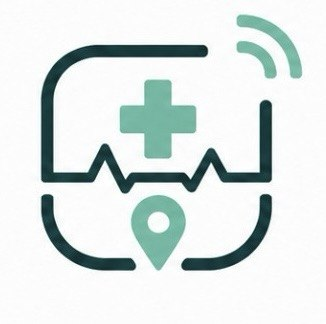

Vicino al paziente
L’elaborazione Edge riduce dipendenza dalla rete e mantiene attiva la raccolta anche quando il PC non è raggiungibile.

Triage IoTInternet of Things 2025/2026 · Università del Salento
Monitoraggio domiciliare intelligente, elaborazione Edge e una visione clinica unificata per accompagnare il paziente ogni giorno.
Il progetto
Triage IoT integra dati fisiologici provenienti da Google Health con la routine domestica stimata tramite beacon BLE. Il Raspberry Pi raccoglie, controlla e aggrega i segnali vicino al paziente, mentre il backend li rende disponibili al medico in tempo reale.
Il sistema non sostituisce il giudizio clinico. Organizza il contesto, evidenzia variazioni rispetto alla normalità personale e mantiene separati problemi tecnici e possibili anomalie, così il professionista può concentrarsi su ciò che richiede attenzione.
L’elaborazione Edge riduce dipendenza dalla rete e mantiene attiva la raccolta anche quando il PC non è raggiungibile.
Grafici, timeline e spiegazioni dell’indice AI trasformano misure eterogenee in una storia temporale consultabile.
Medico, paziente e caregiver ricevono viste e azioni diverse, coerenti con il loro ruolo e con i dati autorizzati.
Architettura distribuita
Acquisizione, inferenza e presentazione restano componenti indipendenti, collegati da contratti REST, WebSocket e MQTT.
Telefono Android
Raspberry Pi 5
PC locale
Dal dato alla decisione
Pixel Watch, Google Health e beacon descrivono fisiologia e presenza nelle stanze.
Timestamp, completezza, freschezza e disponibilità dei sensori vengono verificati prima dell’AI.
Modelli spaziale, wearable e personale producono uno score accompagnato da confidenza e fattori esplicativi.
I risultati viaggiano via MQTT cifrato; in assenza di rete restano nella coda persistente del Raspberry.
Dashboard, task e notifiche chiudono il ciclo tra medico, paziente e caregiver.
Esperienza completa
Quadro clinico, score AI nel tempo, grafici esplorabili, timeline unificata, routine ambientale e stato tecnico.
Presa in carico, risoluzione, note, storico e rimozione controllata trasformano gli alert in un processo operativo.
Il medico assegna check-in e questionari; l’app registra avvio, completamento, durata e risultati, anche offline.
Messaggi e suggerimenti personalizzati raggiungono il paziente o il caregiver corretto tramite associazioni autorizzate.
Autenticazione, audit, credenziali amministrative e separazione dei destinatari proteggono dati e operazioni tecniche.
Risultati mobile e messaggi Edge non inviati vengono salvati localmente e ritentati automaticamente.
Intelligenza artificiale spiegabile
L’indice sintetizza più sorgenti, ma resta sempre accompagnato dal contesto necessario per interpretarlo: qualità dei dati, componenti del modello, confronto con la baseline e andamento precedente.
Demo end-to-end
FASE 01
Il foreground service Android individua i beacon e inoltra i campioni BLE; Google Health rende disponibili i parametri del wearable.
Privacy e affidabilità
Identità verificata. Ogni telefono viene associato dal backend a uno specifico paziente e a un identificatore dispositivo.
Destinatari separati. Token FCM e autorizzazioni distinguono notifiche paziente e caregiver.
Segreti locali. Token OAuth, chiavi Firebase, certificati e password non vengono versionati.
Tracciabilità. Audit e stati operativi documentano le azioni rilevanti senza esporre token tecnici.
Codice sorgente
Il progetto integrato mantiene la visione completa; i repository dedicati isolano responsabilità, configurazione e documentazione di ciascun nodo.
Progetto universitario · 2025/2026
Realizzato da Emilio Pascadopoli e Daniel Spedicato.